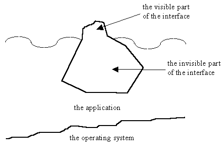
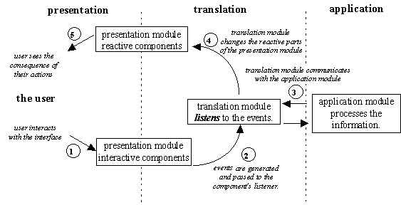
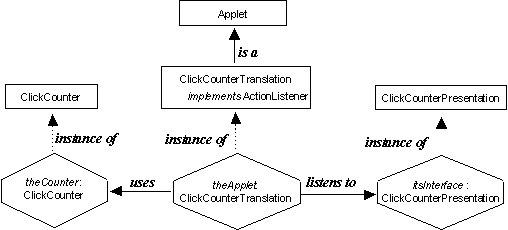

The essence of almost all software engineering approaches to implementation involve the partition of the specification into separate areas of concern and their subsequent implementation as distinct modules. It has already been emphasized that the application functionality should be implemented separately from the interface, what is not so obvious is that the interface module should itself be divided into two areas of concern. This is illustrated in Figure 1.6 which presents an application and its interface as if it were an iceberg.

Figure 1.6 The user interface as an iceberg.
As with an iceberg floating in the sea, the visible part of a graphical user interface represents only a small part of the interface as a whole. The majority of the interface, which cannot be seen, implements the behavior of the interface and is considerably more complex than that part which can be seen. Accordingly the interface should be implemented in two parts: the presentation aspects which will be seen by the user and the translation aspects which supply the behavior. The iceberg diagram also indicates the application part of the artifact which may be a relatively small component, if the iceberg if floating in shallow water; or may be immensely larger than the other two parts, if the iceberg is floating in deep water.
Design Advice
Implement the graphical user interface as a presentation module, containing the visible parts, and a translation module, containing the behavior of the interface.
Before presenting the design and implementation of the interface for the ClickCounter an overview of the ways in which events are created and transmitted in a Java artifact, and how this is used to implement an interface's behavior, will be presented. The mechanism is illustrated in Figure 1.7.

Figure 1.7 Event generation and consequences.
When the user interacts in some way with an interactive component of the presentation module, for example pushing a button, an event is generated by the AWT. The event is then sent to the translation module, which has been registered with the button as its listener. The translation module then communicates with the application module which performs the processing associated with the button which was pressed. When the application module has completed its processing the translation module calls methods in the presentation module to change its appearance. The user thus has a visual feedback of the consequences of their action, closing the cycle.
Foe example: in the ClickCounter application the user might press the increment button whilst the interface is in its minimal state. This will cause an event to be dispatched to the button's listener. The listener object will call the counting object to count the occurrence and then ask the counting object for its current value. The listener object will then pass the current value to the value display, to be shown to the user, and also set the sensitivities of the three buttons to that appropriate for the counting state.
Each part of this design approach: presentation, translation and application will be implemented as a distinct class. An instance of the ClickCounter class, which has already been presented, will provide the application part. An instance of the ClickCounterPresentation class, which will be described below, will provide the presentation part and an instance of the ClickCounterTranslation class, which will also be described below, will provide the translation part.
The ClickCounterTranslation class will extend the Applet class and so have the responsibility for initializing theApplet, constructing the other two parts and starting the application. An instance diagram for this application is given in Figure 1.8.

Figure 1.8 The ClickCounter application - instance diagram.
An instance diagram is used to indicate which instances of which classes, and the relationships which exist between them, are required for the implementation of a particular artifact. The instances are all instances of some class and the parent-child relationships between the classes can also be shown on the diagram. Full details of instance diagram notation can be found in Appendix C.
In this diagram the theApplet is an instance of the ClickCounterTranslation class which itself is an extension of the AWT Applet class. The ClickCounterTranslation class is also shown as implementing the Java ActionListener interface in order for its' instances to be able to listen to the events generated by the presentation object. As an extended Applet, the ClickCounterTranslation class inherits all the methods which are required for the application to initialize itself, post itself onto the screen and interact with the keyboard, mouse and screen.
The object which theApplet is listening to is shown as an instance of the ClickCounterPresentation class called itsInterface. This instance contains the visible components of the interface, the valueDisplay and the three buttons. The instance diagram also shows that theApplet uses an instance of the ClickCounter class called theCounter to actually do the counting.